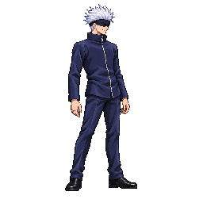

Candidate frame, native 256×256
Approved title-style neutral

Approved title-style combat

HOLD — no art approval. These are unapproved candidates and a disposable diagnostic atlas. Compare the quantized frames to the approved neutral and combat cells below. A passing head probe or garment-area proxy is not an anatomy pass. Every visible head, torso, arm, leg, shoe and frontal shoulder still needs per-frame judgment with uncertainty; hidden or foreshortened landmarks remain inconclusive.
Strongest new holds: throw v05 reads compact through the torso (56–61px projected); airLight1 v07 has a short 55–57px torso and 45–49px arm chain. Light3 v05 loses about 9–11px of crown height across its Part A→B seam, including upright recovery frames. Every strip remains on hold because uncertainty, projection and full-chain comparison prevent an all-segment pass.
Atlas inputs: idle v06 (approved denominator), guard v04, jumpUp v04, jumpFall v06, airRecover v05, throw v05, airLight1 v07, airLight2 v05, airLight3 v12 (retained), light3 v05, hurtLow v04. The isolated pack used 48 colors, 47 frames, and expected frame counts. The fixture alone used scaleGate: warn; production thresholds and shipped outputs are unchanged. One pack warning: airRecover’s manual scale QA record is for v03, not v05. The whole fighter is incomplete.

H = packer head scale probe. B = TOOL-036 garment area proxy (advisory ±10%). Values are measured from this exact isolated atlas. Neither metric checks torso, limbs, shoe shape, shoulder width or contact pose.
All numbered files below are immutable saved candidates. Earlier saved versions remain for comparison; none is approved by this page.
Round totals are by original image or part across version numbers: jumpFall 3/3, airRecover 3/3, throw 3/3, airLight1 3/3, light3 Part A 2/3 and Part B 2/3. AirLight2 records five calls against an authorization of three, an overrun of two. Its original call1/call2 source files were restored by exact SHA-256 match; the three extra outputs are preserved as incident evidence and rejected for anti-aliased painterly rendering. The selected saved candidate remains airLight2 v05 from original call2. No more airLight2 generation is authorized. See the full attempt ledger and round4 inventory.
Historical measurements apply only to their named versions and are not silently carried forward. Historical anatomy record · Historical landmark record · Atlas metadata · machine-readable H/B measurements.
Complete QA and per-frame H/T/A/L/S measurement table · Astra segment table · Full strict dry-run report · Final cumulative source ledger